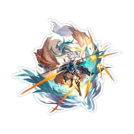

| Feixiao | |
|---|---|
| La Garra del Merlín | |
|  | |
| Rareza: | 5 estrellas |
| Tipo: | Viento |
| Facción: | Cacería |
"‘La Garra de Merlín’ es lo que está escrito en los libros, y ‘El Gran General’ es como me llama la gente. Lo primero suena demasiado formal, lo segundo demasiado exagerado. Ninguno me conviene. Prefiero mi propio título, el ‘General Carente’ — carente de preocupaciones, arrepentimientos y rivales."
Una exesclava de guerra de los borisin, Feixiao es ahora la Garra de Merlin del Xianzhou Yaoqing y una de las Siete Generales Árbiter. Su personalidad es desenfrenada y franca, audaz y directa. Es experta en todas las formas de artes marciales y se ha perfeccionado en una arma suprema. Es ampliamente adorada por los soldados y civiles de Xianzhou como "La Gran General".
Sin embargo, ella lleva la carga de la aflicción de la Ira Lunar. Si ella fuera a cazar todas las abominaciones en su vida limitada — Entonces el único enemigo que tiene Feixiao sería ella misma.
| Contenido |
|---|
Boltsunder: Inflige Daño de Viento igual al 100% del ATQ de Feixiao a un único enemigo.
Waraxe: Inflige daño de viento equivalente al 150% del ATQ de Feixiao a un enemigo objetivo. Luego, lanza inmediatamente 1 instancia del ataque adicional del talento contra el objetivo.
Terrasplit: Inflige DMG de Viento a un enemigo objetivo único, hasta un 551% del ATK de Feixiao. Durante este tiempo, puede ignorar el Tipo de Debilidad para reducir la Dureza del objetivo. Cuando el objetivo no está Roto por Debilidad, la Eficiencia de Ruptura de Debilidad de Feixiao aumenta en un 100%. Durante el ataque, Feixiao primero lanza Boltsunder Blitz o Waraxe Skyward al objetivo, un total de 6 vez(es). Al final, inflige DMG de Viento igual al 128% del ATK de Feixiao al objetivo. Boltsunder Blitz: Inflige DMG de Viento igual al 48% del ATK de Feixiao al objetivo elegido. Si el objetivo está Roto por Debilidad, el multiplicador de DMG aumenta en un 22.5%. Waraxe Skyward: Inflige DMG de Viento igual al 48% del ATK de Feixiao al objetivo elegido. Si el objetivo no está Roto por Debilidad, el multiplicador de DMG aumenta en un 22.5%.
Thunderhunt: Puede activar el Ultimate cuando Aureus Volador alcanza 6 puntos, acumulando hasta 12 puntos. Feixiao gana 1 punto de Aureus Volador por cada 2 ataques de objetivos aliados. Los ataques Ultimate de Feixiao no cuentan para este número. Después de que los compañeros de equipo de Feixiao ataquen a un objetivo enemigo, Feixiao lanza inmediatamente un ataque de seguimiento contra el objetivo principal, infligiendo DMG de Viento igual al 82.5% del ATK de Feixiao. Si no hay un objetivo principal disponible para atacar, Feixiao ataca a un enemigo aleatorio en su lugar. Este efecto solo puede activarse una vez por turno y el conteo de activaciones se restablece al inicio del turno de Feixiao. Al usar este ataque, aumenta el DMG infligido por esta unidad en un 45%, durando 2 turno(s).